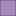

<!doctype html>
<html lang="en">
    <head>
        <meta charset="utf-8">
        <meta http-equiv="X-UA-Compatible" content="IE=edge">
        <meta name="viewport" content="initial-scale=1,user-scalable=no,maximum-scale=1,width=device-width">
        <meta name="mobile-web-app-capable" content="yes">
        <meta name="apple-mobile-web-app-capable" content="yes">
        <link rel="stylesheet" href="css/leaflet.css">
        <link rel="stylesheet" href="css/qgis2web.css"><link rel="stylesheet" href="css/fontawesome-all.min.css">
        <style>
        #map {
            width: 1320px;
            height: 903px;
        }
        </style>
        <title></title>
    </head>
    <body>
        <div id="map">
        </div>
        <script src="js/qgis2web_expressions.js"></script>
        <script src="js/leaflet.js"></script>
        <script src="js/leaflet.rotatedMarker.js"></script>
        <script src="js/leaflet.pattern.js"></script>
        <script src="js/leaflet-hash.js"></script>
        <script src="js/Autolinker.min.js"></script>
        <script src="js/rbush.min.js"></script>
        <script src="js/labelgun.min.js"></script>
        <script src="js/labels.js"></script>
        <script src="data/Joinedlayer_1.js"></script>
        <script>
        var map = L.map('map', {
            zoomControl:true, maxZoom:28, minZoom:1
        }).fitBounds([[40.61071970170534,-74.13657295764044],[40.90102141270534,-73.71191407295898]]);
        var hash = new L.Hash(map);
        map.attributionControl.setPrefix('<a href="https://github.com/tomchadwin/qgis2web" target="_blank">qgis2web</a> &middot; <a href="http://leafletjs.com" title="A JS library for interactive maps">Leaflet</a>');
        var bounds_group = new L.featureGroup([]);
        function setBounds() {
        }
        var layer_OSMStandard_0 = L.tileLayer('http://tile.openstreetmap.org/{z}/{x}/{y}.png', {
            opacity: 1.0,
            attribution: '<a href="https://www.openstreetmap.org/copyright">© OpenStreetMap contributors, CC-BY-SA</a>',
        });
        layer_OSMStandard_0;
        map.addLayer(layer_OSMStandard_0);
        function pop_Joinedlayer_1(feature, layer) {
            var popupContent = '<table>\
                    <tr>\
                        <td colspan="2"><b>Count of fares: <b>' + (feature.properties['tip prct of fare_count'] !== null ? Autolinker.link(String(feature.properties['tip prct of fare_count'])) : '') + '</td>\
                    </tr>\
                    <tr>\
                        <td colspan="2"><b>Fare Median: <b>' + (feature.properties['tip prct of fare_median'] !== null ? Autolinker.link(String(feature.properties['tip prct of fare_median'])) : '') + '</td>\
                    </tr>\
                </table>';
            layer.bindPopup(popupContent, {maxHeight: 400});
        }

        function style_Joinedlayer_1_0(feature) {
            if (feature.properties['tip prct of fare_median'] >= 0.000000 && feature.properties['tip prct of fare_median'] <= 0.019608 ) {
                return {
                pane: 'pane_Joinedlayer_1',
                opacity: 1,
                color: 'rgba(35,35,35,1.0)',
                dashArray: '',
                lineCap: 'butt',
                lineJoin: 'miter',
                weight: 1.0, 
                fill: true,
                fillOpacity: 1,
                fillColor: 'rgba(0,0,4,1.0)',
            }
            }
            if (feature.properties['tip prct of fare_median'] >= 0.019608 && feature.properties['tip prct of fare_median'] <= 0.076825 ) {
                return {
                pane: 'pane_Joinedlayer_1',
                opacity: 1,
                color: 'rgba(35,35,35,1.0)',
                dashArray: '',
                lineCap: 'butt',
                lineJoin: 'miter',
                weight: 1.0, 
                fill: true,
                fillOpacity: 1,
                fillColor: 'rgba(80,18,123,1.0)',
            }
            }
            if (feature.properties['tip prct of fare_median'] >= 0.076825 && feature.properties['tip prct of fare_median'] <= 0.142857 ) {
                return {
                pane: 'pane_Joinedlayer_1',
                opacity: 1,
                color: 'rgba(35,35,35,1.0)',
                dashArray: '',
                lineCap: 'butt',
                lineJoin: 'miter',
                weight: 1.0, 
                fill: true,
                fillOpacity: 1,
                fillColor: 'rgba(182,54,121,1.0)',
            }
            }
            if (feature.properties['tip prct of fare_median'] >= 0.142857 && feature.properties['tip prct of fare_median'] <= 0.187778 ) {
                return {
                pane: 'pane_Joinedlayer_1',
                opacity: 1,
                color: 'rgba(35,35,35,1.0)',
                dashArray: '',
                lineCap: 'butt',
                lineJoin: 'miter',
                weight: 1.0, 
                fill: true,
                fillOpacity: 1,
                fillColor: 'rgba(252,135,97,1.0)',
            }
            }
            if (feature.properties['tip prct of fare_median'] >= 0.187778 && feature.properties['tip prct of fare_median'] <= 0.240651 ) {
                return {
                pane: 'pane_Joinedlayer_1',
                opacity: 1,
                color: 'rgba(35,35,35,1.0)',
                dashArray: '',
                lineCap: 'butt',
                lineJoin: 'miter',
                weight: 1.0, 
                fill: true,
                fillOpacity: 1,
                fillColor: 'rgba(252,253,191,1.0)',
            }
            }
        }
        map.createPane('pane_Joinedlayer_1');
        map.getPane('pane_Joinedlayer_1').style.zIndex = 401;
        map.getPane('pane_Joinedlayer_1').style['mix-blend-mode'] = 'normal';
        var layer_Joinedlayer_1 = new L.geoJson(json_Joinedlayer_1, {
            attribution: '',
            pane: 'pane_Joinedlayer_1',
            onEachFeature: pop_Joinedlayer_1,
            style: style_Joinedlayer_1_0,
        });
        bounds_group.addLayer(layer_Joinedlayer_1);
        map.addLayer(layer_Joinedlayer_1);
        var baseMaps = {};
        L.control.layers(baseMaps,{'Joined layer<br /><table><tr><td style="text-align: center;"></td><td> 0.0000 - 0.0196 </td></tr><tr><td style="text-align: center;"></td><td> 0.0196 - 0.0768 </td></tr><tr><td style="text-align: center;"></td><td> 0.0768 - 0.1429 </td></tr><tr><td style="text-align: center;"></td><td> 0.1429 - 0.1878 </td></tr><tr><td style="text-align: center;"></td><td> 0.1878 - 0.2407 </td></tr></table>': layer_Joinedlayer_1,"OSM Standard": layer_OSMStandard_0,},{collapsed:false}).addTo(map);
        setBounds();
        </script>
    </body>
</html>
